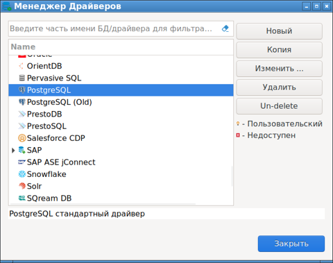
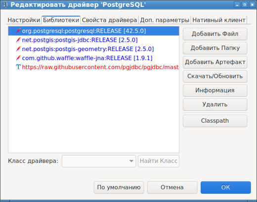
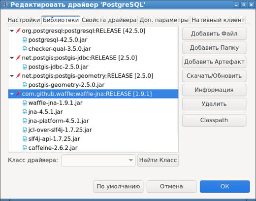

Open Source менеджер для работы с базами данных DBeaver Community Edition (CE) поставляется без драверов баз данных. Это неудобно, но так решили разработчики чтобы зарабатывать на Enterprise-версии своей программы. Но неудобно - это еще не значит что неправильно. Предполагается, что дравера постоянно дорабатываются и улучшаются различными командами, и DBeaver выкачивает из интернета самую лучшую актуальную версию. Для этого в DBeaver для каждого вида БД (MySQL, PostgreSQL, SQLite и т. д.) в менеджере драйверов сделаны настройки, какие файлы, какие зависимости и откуда надо выкачивать.
Из-за этого существет проблема, что невозможно просто так взять и воспользоваться Dbeaver во внутренней сети, в которой нет доступа к Интернет. Dbeaver будет работать, но подключиться к какой-либо базе не получится, пока не будут доустановлены требующиеся драйвера.
На английском языке для старой версии DBeaver имеется такая инструкция по переносу дравйверов:
How to install database driver for Dbeaver without network
В новых версиях (как минимум в 23.0.0) месторасположения файлов и пунктов меню изменены. В этой статье рассказывается как следует переносить драйвера из Интернет в более новых версиях DBeaver.
Подготовка
Для переноса необходим компьютер, подключенный к Интернет, на который следует установить ту же версию DBeaver что стоит на компьютере в закрытой сети предприятия.
На подключенном к Интернет компьютере следует выбрать в меню:
База данных - Менеджер драйверов
или, если такого пункта меню нет, то:
База данных - Управление драйверами
В открывшемся окне следует выбрать драйвер поддержки нужного вида БД (обычно это SQLite, MySQL, PostgreSQL), и кликнуть на кнопку "Изменить".

Откроется окно настроек драйвера. В нем необходимо выбрать вкладку "Библиотеки", после чего нажать кнопку "Обновить".

До скачивания

После скачивания
В результате будут выкачены из Интернета драйвера для всех необходимых БД. Файлы драйверов будут сложены в каталоге:
/home/<User>/.local/share/DBeaverData/drivers
Этот каталог надо скопировать на Flash-ку или любым другим образом перенести на компьютер, на котором нет доступа в сеть Интернет.
Установка драйверов
Все последующие действия производятся на компьютере, который отключен от сети Интернет. На этом компьютере должна быть установлена та же версия DBeaver, что и на компьютере, с которого переносятся драйвера.
Следует понимать, что нельзя просто разместить копию каталога с драйверами по тому же пути в пользовательском каталоге целевой машины. Так работать не будет, так как DBeaver должен где-то в своих закромах зарегистрировать файлы драйверов.
Поэтому в каталоге /home/<User>/.local/share/DBeaverData необходимо сделать подкаталог driversFromInternet, и скопировать туда содержимое каталога с драйверами, которое было сделано на этапе подготовки.
Затем нужно запустить Менеджер драйверов:
База данных - Менеджер драйверов
В нем нужно выбрать требуемый тип базы данных (удобенне начинать с SQLite, так как в нем всего пара файлов, и проще понять последовательность действий). В открышемся окне необходимо переключиться на вкладку Библиотеки. В списке библиотек развернуть все группировки чтобы видеть все конечные файлы.
Далее надо последовательно, для каждого конечного файла, нажать кнопку "Добавить файл", и найти указанный файл в дебрях каталога /home/<User>/.local/share/DBeaverData/driversFromInternet. Все файлы ищутся достаточно просто. Нужно только не забывать, что по-умолчанию в окне выбора файла установлен фильтр *.jar, и если нужно выбрать файл с другим расширением, то данный фильтр нужно переключить.
Когда все файлы драйвера будут добавлены в список библиотек, нужно удалить те файлы и группировки, которые были в этом списке до добавления скачанных. Это необходимо сделать из-за того, что если эти данные останутся, то они будут помечены как нескаченные (ведь Интернет недоступен), и драйвер работать не будет, так как DBeaver будет считать что драйвер до конца не установлен, несмотря на то, что все файлы на самом деле уже имеются в наличии. Для удаления выбирается файл или группа и нажимается кнопка "Удалить".
Примечание: всегда имеется возможность восстановить список файлов, которые требуется скачивать из Интренета. Для этого нужно нажать кнопку "По умолчанию" в той же вкладке настроек библиотек.
После установки файлов библиотек необходимо перезапустить DBeaver, и соединение с данным типом БД начнет работать.
Все вышеуказанные действия следует повторить для каждого типа БД.